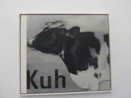

Far out in the uncharted backwaters of the unfashionable end of the western spiral arm of the Galaxy lies a small unregarded yellow sun. Hey! An image that doesn't link:  Orbiting this at a distance of roughly ninety-two million miles is an utterly insignificant little blue green planet whose ape-descended life forms are so amazingly primitive that they still think digital watches are a pretty neat idea.
This planet has - or rather had - a problem, which was this: most of the people on it were unhappy for pretty much of the time. Many solutions were suggested for this problem, but most of these were largely concerned with the movements of small green pieces of paper, which is odd because on the whole it wasn't the small green pieces of paper that were unhappy.
Sed erat aequius Triarium aliquid de dissensione nostra iudicare. Illud mihi a te nimium festinanter dictum videtur, sapientis omnis esse semper beatos; Quod iam a me expectare noli. Primum in nostrane potestate est, quid meminerimus? Ne in odium veniam, si amicum destitero tueri. Et quidem illud ipsum non nimium probo et tantum patior, philosophum loqui de cupiditatibus finiendis. Sed residamus, inquit, si placet. Nos vero, inquit ille; Sed plane dicit quod intellegit.
Eorum enim est haec querela, qui sibi cari sunt seseque diligunt. Quae cum magnifice primo dici viderentur, considerata minus probabantur. Quis est, qui non oderit libidinosam, protervam adolescentiam? Summum a vobis bonum voluptas dicitur. Verum tamen cum de rebus grandioribus dicas, ipsae res verba rapiunt; Ad quorum et cognitionem et usum iam corroborati natura ipsa praeeunte deducimur.
And then, one Thursday, nearly two thousand years after one man had been nailed to a tree for saying how great it would be to be nice to people for a change, one girl sitting on her own in a small cafe in Rickmansworth suddenly realized what it was that had been going wrong all this time, and she finally knew how the world could be made a good and happy place. This time it was right, it would work, and no one would have to get nailed to anything. Hey! An image with a link!